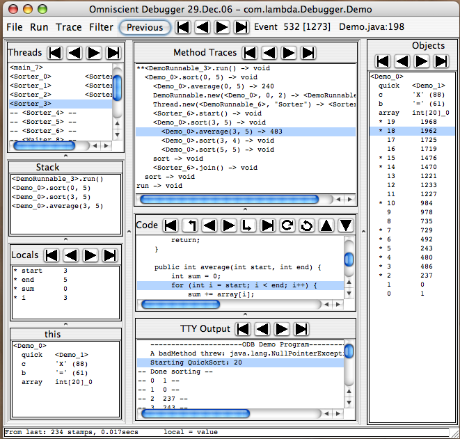

Omniscient Debugging
Omniscient Debugging is the idea of collecting "time stamps" at each "point
of interest" (setting a value, making a method call, throwing/catching an
exception) in a program and then allowing the programmer to use those time
stamps to explore the history of that program run. The ODB is an
implementation of this idea written in Java. It inserts code into the program's classes
as they are loaded and when the program runs, the events are
recorded.

The main debugger window (above) will pop up when the program calls exit() or when
the "Stop Recording" button in the control window (not
shown) is pushed. The programmer will then be able to navigate through time
to find interesting events or questionable values.
The different window panes show the most interesting information about the
program. The Trace pane shows all the method calls made (per thread) during
the program run. The Stack pane shows the stack for the current method,
the local variables are in the Locals pane, below that is the 'this' object,
etc. As the ODB reverts to different
times, all the panes are updated appropriately. Thus at event 532 (out of 1273), the value of
element number two in the array is 237.
Navigation
The primary modes of navigation are: selecting a line in the trace pane, code pane,
stack pane, or thread pane; or pushing one of the buttons to move to the first/last/previous/next/etc.
context switch,
method call, line of code, change of variable value, etc. These will all revert the
debugger to a time appropriate to the selection.
Data Display
All objects are displayed with a print string such as "<Person_123 Jimmy>"
where "Person" is the class name, "123" is an arbitrary unique id for
Person objects, and "Jimmy" is the value of an optionally selected field.
Any object which is displayed anywhere may be copied to the "Objects Pane"
by double clicking on it. As the programmer navigates through different times, the
instance variables values will be updated. Values which have not yet been
set (e.g., instance variables of objects before they have been created) will
be displayed as "--". In the TTY output pane, "Done Sorting" was not
printed until time 800.
Performance
Although it is possible to record absolutely everything, it is not very
useful. One may skip recording classes which are trusted (such as the JCF
classes, library classes, and your own well-tested classes) or not interesting. Indeed, the
default is to instrument and record only those classes in the selected
package. One may start/stop recording as you see fit, using the control
window. Performance has not proven to be a general problem. Ant recompiling itself
ran 7x slower and generated under 1 million events. I regularly debugged the
debugger with itself on a 110MHz SS4.
Starting
Go to
www.LambdaCS.com/debugger/debugger.html and start the Java Web Start demo
by clicking on the link. Select "Demo" (a multithreaded quicksort) for the start menu.
It will run, the debugger window will popup, and you will be able
to "explore" the program. The ODB is GPL'd and the jar file contains the complete source and a manual.
To debug your own programs, there are
aliases (UNIX) and .BAT files (Win32), that allow you just to type:
% debug YourProgram arg0 arg1 ...
Bil Lewis is a computer scientist, currently teaching at Tufts University. He concentrated on
AI at Indiana and Penn, coming to work at the SRI AI center and later to teach at Stanford. After developing programming
tools at Sun Microsystems for eight years, he returned to education and research. He has written
three books on multithreading, the GNU EMACS Lisp manual, a video on garbage collection, and numerous magazine articles.
He does regular presentations on a variety of software topics and is always interested in presenting
for new groups.
Bil@LambdaCS.com